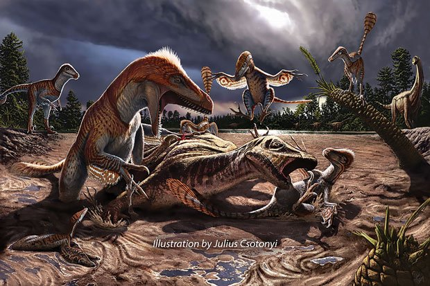

Dromaeosauridae é uma família de dinossauros terópodes conhecidos popularmente como "raptores", famosa por incluir dinossauros ágeis e predadores. Esses dinossauros viveram do final do Jurássico até o final do Cretáceo (cerca de 167 a 66 milhões de anos atrás) e se destacam por serem carnívoros rápidos, inteligentes e bem adaptados à caça. Sua principal característica era uma grande garra em forma de foice no segundo dedo de cada pé, que provavelmente era usada para atacar suas presas.
Tamanho Variado: Embora o tamanho varie entre as diferentes espécies, os dromaeossaurídeos geralmente eram de pequeno a médio porte. O Velociraptor, por exemplo, media cerca de 2 metros de comprimento, enquanto o maior membro da família, o Utahraptor, chegava a 6-7 metros.
Garra em Forma de Foice: Uma das características mais marcantes dos dromaeossaurídeos era a garra curva em forma de foice no segundo dedo de cada pé. Essa garra era retrátil e podia ser levantada quando o dinossauro corria, mas era usada durante o ataque para rasgar a pele e tecidos de suas presas.
Cauda Rígida: A cauda dos dromaeossaurídeos era longa e rígida, sustentada por uma série de tendões ossificados, o que proporcionava estabilidade durante a corrida e manobras rápidas enquanto caçavam.
Penas: Fósseis bem preservados revelaram que muitos dromaeossaurídeos, como o Velociraptor, eram cobertos por penas. Essas penas não permitiam voo, mas provavelmente eram usadas para regulação de temperatura, exibição e possivelmente para ajudar no equilíbrio durante a corrida.
Crânio e Dentes Afiados: Eles possuíam um crânio alongado com mandíbulas equipadas com dentes afiados e serrilhados, perfeitos para cortar a carne das presas. A mordida, junto com a garra afiada, os tornava predadores letais.
Os dromaeossaurídeos eram principalmente carnívoros e caçavam ativamente uma grande variedade de presas, incluindo outros dinossauros, pequenos mamíferos, répteis e até peixes. Há evidências de que alguns dromaeossaurídeos caçavam em grupos, especialmente aqueles que eram de porte menor, como o Velociraptor. Esse comportamento colaborativo poderia ter sido útil para atacar presas maiores, compensando seu tamanho relativamente pequeno.
Esses dinossauros eram ágeis e rápidos, e acredita-se que eles usavam suas habilidades de corrida e salto para emboscar e atacar presas de forma precisa. A garra em forma de foice era provavelmente usada para agarrar e incapacitar as presas, enquanto seus dentes afiados finalizavam o ataque.
América do Norte: Incluindo gêneros como Deinonychus e Utahraptor.
Ásia: Onde o Velociraptor e muitos pequenos dromaeossaurídeos, como o Microraptor, foram descobertos.
Europa e América do Sul: Embora menos comuns, também há registros de dromaeossaurídeos nessas regiões.
Os dromaeossaurídeos são frequentemente considerados dinossauros relativamente inteligentes para seus padrões, com base no tamanho de seus cérebros em relação ao corpo. Isso sugere que eles tinham um comportamento social complexo e uma boa capacidade de caça em grupo. Eles também possuíam visão binocular, o que lhes dava uma excelente percepção de profundidade, útil para atacar com precisão.
O Velociraptor é talvez o mais famoso dos dromaeossaurídeos, amplamente popularizado pela franquia de filmes "Jurassic Park". Apesar da representação exagerada nos filmes, o verdadeiro Velociraptor era relativamente pequeno, medindo cerca de 2 metros de comprimento e 50 cm de altura. Ele viveu no que hoje é a Mongólia, durante o Cretáceo Superior. Fósseis de Velociraptor com penas confirmam que ele era coberto por uma plumagem. A descoberta de penas em fósseis relacionados ao Velociraptor foi uma das mais surpreendentes da paleontologia moderna. Isso ajudou a redefinir a maneira como imaginamos dinossauros terópodes, conectando-os mais estreitamente com as aves modernas.
O Utahraptor ostrommaysorum é o maior dromaeossaurídeo conhecido, medindo cerca de 6 a 7 metros de comprimento e podendo pesar até 1 tonelada. Descoberto no estado de Utah, nos Estados Unidos, este dinossauro possuía as mesmas características dos dromaeossaurídeos menores, como a grande garra em forma de foice, mas em proporções gigantescas. Existem debates sobre se o Utahraptor caçava em bandos, como sugerido para outros dromaeossaurídeos. Embora não haja evidências diretas de comportamento cooperativo de caça, a possibilidade não está descartada, pois isso poderia ter facilitado a captura de presas maiores.
O Deinonychus foi descoberto na América do Norte e era um dinossauro de porte médio, medindo cerca de 3 metros de comprimento. Ele é famoso por inspirar a concepção original dos "raptores" em "Jurassic Park". O Deinonychus é notável por seu papel na revolução do dinossauro ativo, mudando a percepção dos dinossauros de criaturas lentas e pesadas para predadores rápidos e inteligentes. A descoberta do Deinonychus foi uma das peças que ajudaram a consolidar a teoria de que as aves são descendentes diretos dos dinossauros, especialmente dos dromaeossaurídeos, devido a características como penas e estruturas esqueléticas semelhantes.
O Microraptor foi um dos menores dromaeossaurídeos, com cerca de 1 metro de comprimento, e é famoso por suas quatro asas (duas nos braços e duas nas pernas). Ele é um dos exemplos mais claros de dinossauros com adaptações para planar entre as árvores, possuindo penas longas e assimétricas que indicam que ele podia deslizar no ar, mas não voar ativamente. O Microraptor frequentemente é citado como um dos principais exemplos de transição entre dinossauros terrestres e aves voadoras. Ele apresenta uma combinação única de características que mostram como os primeiros experimentos com o voo podem ter ocorrido entre os dinossauros.
Como a maioria dos dinossauros, os dromaeossaurídeos foram extintos no final do período Cretáceo, há cerca de 66 milhões de anos, durante o evento de extinção em massa que dizimou grande parte da vida na Terra, provavelmente causado por um impacto de asteroide. No entanto, acredita-se que os dromaeossaurídeos estão intimamente relacionados às aves modernas, o que significa que, de certa forma, seus descendentes sobreviveram até os dias de hoje.
A fama dos "raptores" aumentou enormemente graças aos filmes de Jurassic Park, embora muitas das características do Velociraptor nos filmes estejam incorretas, como seu tamanho e a ausência de penas.
Fósseis de dromaeossaurídeos foram encontrados em combate com outras espécies de dinossauros. Um fóssil notável, conhecido como "O Lutador Velociraptor e Protoceratops", mostra um Velociraptor preso em combate com um dinossauro herbívoro Protoceratops, ambos mortos em meio à luta.
O Deinonychus desempenhou um papel crucial na chamada "revolução dos dinossauros", mudando a visão de dinossauros como criaturas lentas para animais ativos e inteligentes.